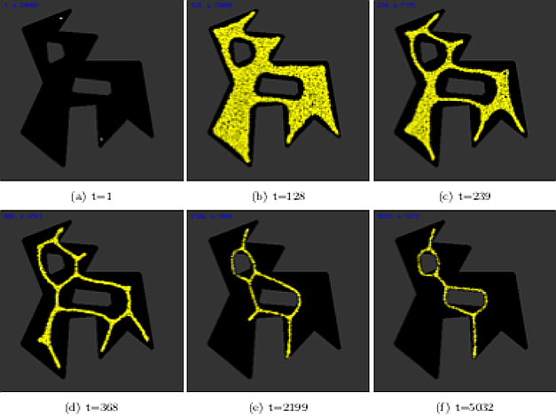

Concevoir un modèle n'est pas chose facile
Nous nous sommes donné pour objectif de modéliser et de simuler l’évolution de Physarum Polycephalum dans un environnement comportant des obstacles lorsque celui-ci présentait des sources de nourriture (flocons d’avoine) situées au niveau des bâtiments entre lesquels nous souhaitions optimiser le réseaux de chemins.
Nous voulions donc relier différents sites du campus que nous fréquentions souvent de manière optimale. Qu’entendons nous par “optimale” ? Nous voulions que la durée totale des routes reliant les bâtiments d'intérêts soit minimale. Notre réseau pouvait être considéré comme valide si il était possible de se rendre d’un bâtiment vers n’importe quel autre bâtiment tant que ces deux appartenaient à la liste des bâtiments choisis préalablement.
Nous avons donc débuté nos recherches par ce qui nous semblait alors le plus adapté : un algorithme capable de résoudre un problème dit “problème de plus court chemin”.
En voici la définition : "Un problème de plus court chemin est un problème algorithmique de la théorie des graphes. L'objectif est de calculer un chemin entre des sommets d'un graphe qui minimise ou maximise une certaine fonction" (Wikipedia).
Dans notre cas, les sommets correspondaient aux bâtiments à relier, et l’objectif était de minimiser une certaine fonction dont nous aurions établie l’expression (en la faisant dépendre de paramètres tels que la distance, le relief, la largeur des chemins déjà en place...).
Les algorithmes les plus connus dans ce domaine sont les algorithmes A* et de Dijkstra.
Toutefois, après de nombreuses recherches et la lecture de plusieurs articles, nous nous sommes aperçus que notre problème correspondait davantage au calcul d’un arbre couvrant minimal “minimum spanning tree problem MST”. En théorie des graphes, étant donné un graphe dont les arêtes sont pondérées, un arbre couvrant de poids minimal de ce graphe est un arbre qui connecte tous les sommets ensemble dont la somme des poids des arêtes est minimale.
Quel est la différence entre les deux problèmes ? Pour le premier, il s’agit de connaître le chemin le plus court d’un point de départ (un certain bâtiment) vers chaque destination (tous les autres bâtiments de la liste) tandis que le deuxième s’attache à déterminer un arbre qui connecte tous les nœuds tel que la somme de tous les coûts est le minimum possible. Les algorithmes de Dijkstra et A* trouvent le chemin le plus court entre son nœud de début et tous les autres nœuds. Donc, en retour, nous obtenons l'arbre de distance minimum à partir du nœud de départ, c'est-à-dire que nous pouvons atteindre tous les autres nœuds aussi efficacement que possible.
Les algorithmes de Prims et de Kruskal (algorithmes les plus connus donnant l’arbre couvrant de poids minimal pour un graphe donné) donnent un arbre qui connecte tous les nœuds alors que la somme de tous les coûts est le minimum possible.
Un des problèmes avec tous ces algorithmes est qu’ils ne sont pas adaptés avec notre volonté de représenter le plan du campus avec les bâtiments dans notre simulation. En effet, le graphe obtenu après résolution de l’algorithme ne prends pas en compte les éventuels obstacles entre les différents bâtiments. Enfin, il est possible de les prendre en compte en assignant un poids plus ou moins important aux différentes arêtes reliant les bâtiments, mais ceci ne permet pas de représenter de façon explicite la présence des obstacles sur une interface graphique.
Ensuite, nos expériences avec le blob ainsi que les différents rapports qui ont pu être rédigés jusque-là montrent que les chemins gardés par le blob ne correspondent pas au réseau établit par les algorithmes de la littérature. En effet, la particularité de Physarum Polycephalum est qu’il crée de nouveaux noeuds comme le montre très clairement les figures suivantes.
La première colonne d’images correspond à des arbres couvrant minimaux tandis que la seconde correspond à ce que l’on observe après que la cellule ait trouvé son état stable.
On remarque qu’un point légèrement à l’écart est lié aux deux points qui lui sont le plus proches avec deux chemins distincts dans la première colonne alors que pour la seconde colonne ce point est relié par un chemin unique aux chemins qui lie les deux points qui lui sont le plus proches. Ceci est intéressant car si cela ne minimise pas la distance pour le piéton, cela réduit la distance totale des chemins ou routes à construire pour permettre au piéton de rejoindre chaque endroit et donc le coût de construction.
On comprends alors l'intérêt du biomimétisme et de notre volonté de modéliser le comportement du blob dans l’optimisation de notre réseau.
Nous avons alors focalisé nos recherches sur la manière dont il se déplaçait, comment et pourquoi il gardait un chemin plutôt qu’un autre…
Il nous a ensuite fallu réfléchir à comment modéliser chaque comportement numériquement. Voici une description simplifiée de notre modèle : Celui-ci est composé de plusieurs milliers de particules individuelles mobiles interagissant entre elles sur une grille diffusive 2D. Chaque particule peut sentir la concentration d’une substance ‘chimio-attractante’ se diffusant au sein de la grille et chaque agent du modèle (chaque particule) dépose cette même substance à l'intérieur de sa case jusqu’à ce qu'elle soit capable d’avancer et de changer de place. L’ensemble des particules forment une population multi-agents (le plasmode virtuel) et on observe alors l’émergence des propriétés de cohésion et de minimisation de forme au niveau macroscopique (résultant de l’interaction de chaque particule au niveau microscopique).
On place alors le plasmode virtuel sur une surface 2D tel que celui-ci remplisse complètement l’espace libre. Il entoure alors tous les obstacles. Les points à relier sont représentés par la projection d’une propriété attractante sur la surface qui les représente.
Ensuite la taille de la population diminue en ajustant les paramètres qui gèrent la croissance et la réduction en faveur de la réduction. Les bordures et les obstacles ont une propriété répulsive qui empêche le blob de les recouvrir.
Nos idées d'amélioration
Comme vous avez surement pu le remarquer sur les images et vidéos obtenues grâce à notre modélisation, il y a beaucoup trop de chemins. En fait, le problème est que les chemins passent de part et d’autre de chaque bâtiment comme l'illustre l’ensemble de figures suivant avec la simulation réalisée sur un environnement simple avec deux points à relier et deux obstacles.
De multiples chemins “les plus courts” finaux sont observés car ils existent déjà à l’initialisation de la simulation puisque l’on place le blob partout autour des obstacles. Afin de s’assurer qu’un seul des deux chemins générés soit retenu, l’idée serait de diviser le processus de mécanisme de répulsion en deux parties. La première partie du mécanisme a lieu lors de l’initialisation : au lieu de remplir seulement l’espace libre avec des particules, on remplit l’ensemble de la surface, c’est à dire que l’on recouvre les obstacles avec des particules aussi. Si les obstacles repoussent le blob immédiatement alors ce dernier quitterait les obstacles dans toutes les directions et le problème des chemins multiples persisterait. D’où la nécessité d’une deuxième partie dans notre implémentation. On commence par activer la propriété répulsive uniquement sur les bords de l’ensemble surface, la réduction du blob commence (comme si aucun obstacle n’était présent). Puis, dès qu’un obstacle et partiellement découvert, on génère la propriété de repoussant sur cette partie découverte. Le blob est ainsi “poussé” depuis l'intérieur des obstacles vers l'extérieur mais d’un seul côté uniquement jusqu’à ne plus le toucher du tout. Toute cette procédure est illustrée grâce aux figures ci-dessous.
La simulation d’un tel mécanisme qui opère graduellement est complexe et nous ne sommes pas parvenu, dans le respect du temps qui nous était imparti, de le coder. Il serait donc très intéressant de s’y attarder par la suite afin de produire un logiciel compétent et puissant, permettant la simulation de réseaux de transports optimaux en terme de coût de construction.
De multiples chemins “les plus courts” finaux sont observés car ils existent déjà à l’initialisation de la simulation puisque l’on place le blob partout autour des obstacles. Afin de s’assurer qu’un seul des deux chemins générés soit retenu, une première idée serait de diviser le processus de mécanisme de répulsion en deux parties. La première partie du mécanisme a lieu lors de l’initialisation : au lieu de remplir seulement l’espace libre avec des particules, on remplit l’ensemble de la surface, c’est à dire que l’on recouvre les obstacles avec des particules aussi. Si les obstacles repoussent le blob immédiatement alors ce dernier quitterait les obstacles dans toutes les directions et le problème des chemins multiples persisterait. D’où la nécessité d’une deuxième partie dans notre implémentation. On commence par activer la propriété répulsive uniquement sur les bords de l’ensemble surface, la réduction du blob commence (comme si aucun obstacle n’était présent). Puis, dès qu’un obstacle et partiellement découvert, on génère la propriété de repoussant sur cette partie découverte. Le blob est ainsi “poussé” depuis l'intérieur des obstacles vers l'extérieur mais d’un seul côté uniquement jusqu’à ne plus le toucher du tout. Toute cette procédure est illustrée grâce aux figures ci-dessous.
La simulation d’un tel mécanisme qui opère graduellement est complexe et nous ne sommes pas parvenu, dans le respect du temps qui nous était imparti, de le coder. Il serait donc très intéressant de s’y attarder par la suite afin de produire un logiciel compétent et puissant, permettant la simulation de réseaux de transports optimaux en terme de coût de construction.
Une autre possibilité serait d'utiliser un système d'équations différentielles modélisant l'évolution des différents chemins en fonctions de paramètres basés sur la mécanique des fluides, comme mentionné dans l'article de Atsushi Tero, Ryo Kobayashi et Toshiyuki Nakagaki : A mathematical model for adaptive transport network in path finding by true slime mold. De la même manière, les équations étant relativement compliquées, le temps devra être un élément clé afin de parvenir à un tel objectif.